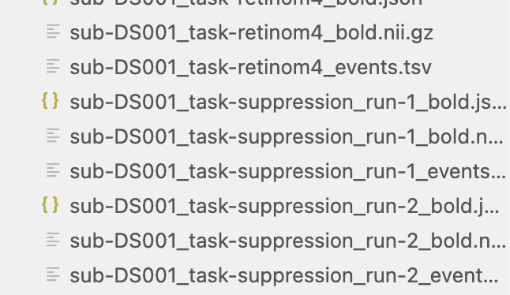
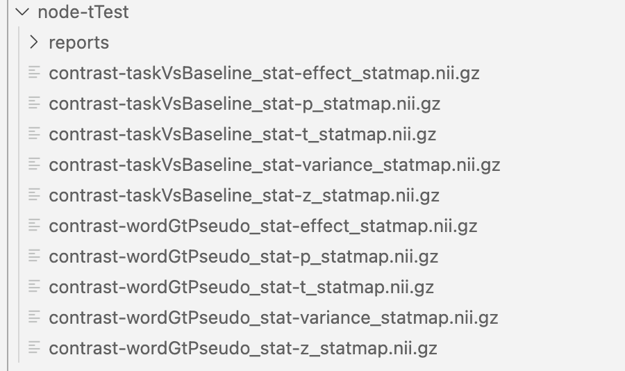
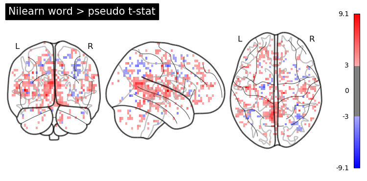
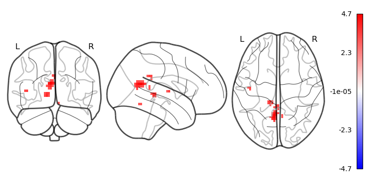
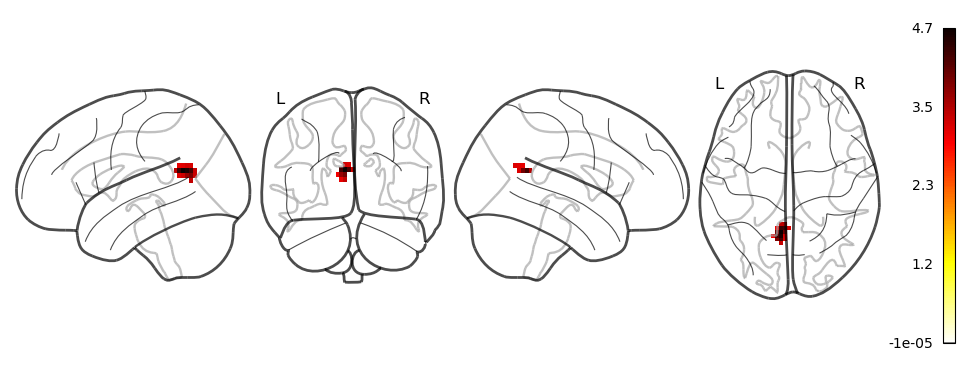

1. Preprocessing with fMRIPrep
fMRIPrep is a robust and standardized pipeline for fMRI data. It handles tasks such as skull-stripping, motion correction, distortion correction, and registration to standard space—all while creating extensive reports for quality control.
fMRIPrep is included in NeuroDesk and can be loaded by module command.
module load fmriprep
module listIt shows:
Currently Loaded Modules:
1) fmriprep/24.1.1
Now the command fmriprep is available for further analysis.
1.1 Batch process individual participants
Here is a a typical bash code using fmriprep:
#!/bin/bash
#1. first load the module fmriprep
module load fmriprep
# setup input and output folders
proj_dir=/dss/open/ds000003 # change to your project directory
# preprossed data directory
output=${proj_dir}/derivatives
fmriprep $proj_dir $output \
participant\
--participant-label 01\
-w /dss/tmp \
--fs-license-file /dss/fsl_licence.txt \
--fs-no-reconall \
--output-spaces T1w MNI152NLin2009cAsym
-vParameters Explained:
- —participant-label: Select which subjects to process.
- —fs-no-reconall: if you do not wish to run FreeSurfer’s recon-all
- —output-space: Set your target standard space
- -w working directory
- -v verbose output
1.2 Inspecting fMRIPrep Outputs
-
Quality Control: Open the HTML reports in your web browser to check the alignment and quality of preprocessing.
-
Outputs: Your preprocessed images and confound regressors (confounds.tsv) are ready for statistical analysis.
2. Defining the Statistical Model with BIDS-StatsModel
The official website provides detailed specifications. BIDS Stats Models describe how to fit statistical models for neuroimaging data using a machine-readable JSON document. The following instructions primarily come from the official website.
This model focuses on general linear mixed models (GLMs) with the data input from fMRIPrep.
2.1 Representing multi-stage neuroimaging models
Statistical analysis of neuroimaging data occurs in stages, with parameter estimates from lower levels propagating to higher levels. In fMRI, we typically fit a design matrix to time series data, followed by a fixed-effects model for subject-level estimates, culminating in a dataset-level random-effects one-sample t-test to assess population effects. At each analysis level, we must identify image inputs linked to the design matrix and manage outputs from previous levels. BIDS Stats Models offers a machine-readable document to describe multi-stage neuroimaging analyses accurately and flexibly. This is achieved through a graph of Nodes representing each analysis level and Edges that indicate data flow between Nodes. Each Node includes a Model for estimation and at least one Contrast for computed outputs, along with a GroupBy directive for input organization.
An example from the official website:
In a Simon task, participants were scanned across 2 runs to indicate if a diamond presented to the left or right of a fixation cross was green or red. There were two conditions: color-spatial congruent and incongruent trials. The analysis aims to determine regions with greater activity for incongruent versus congruent trials across participants.
First, we model run-level timeseries for separate “Incongruent” and “Congruent” trials for each run. Then, we compute the contrast for Incongruent > Congruent (IvC) trials. This contrasts then goes to a subject-level estimator, averaging the IvC effect per subject. Lastly, we send these estimates to a dataset-level estimator for a one-sample t-test across the IvC contrast subject estimates.
This is a visualization how the analysis goes for 3 participants:

We can formulate this analysis using BIDS Stats Model using json:
{
"Name": "Simon IvC",
"BIDSModelVersion": "1.0.0",
"Input": {"subject": ["01", "02", "03"], "task": "simon"},
"Nodes": [
{
"Level": "Run",
"Name": "run_level",
"GroupBy": ["run", "subject"],
"Model": {"X": [1, "incongruent", "congruent"], "Type": "glm"},
"Contrasts": [
{
"Name": "IvC",
"ConditionList": ["incongruent", "congruent"],
"Weights": [1, -1],
"Test": "t"
}
]
},
{
"Level": "Subject",
"Name": "subject_level",
"GroupBy": ["subject", "contrast"],
"Model": {"X": [1], "Type": "meta"},
"DummyContrasts": {"Test": "t"}
},
{
"Level": "Dataset",
"Name": "one-sample_dataset",
"GroupBy": ["contrast"],
"Model": {"X": [1], "Type": "glm"},
"DummyContrasts": {"Test": "t"}
}
]
}As you can, there are three levels of analysis: Run, Subject, Dataset. At the Run level, there are many sources of possible variables, and the most important event file _events.tsv.
Tip
In Visual Studio Code,
Json Editorplugin can help you see a json in a simple tree view.
The model is defined by Model:
"Model": {"X": [1, "incongruent", "congruent"], "Type": "glm"},where X defines variables in the design matrix, here are the constant, incongruent, and congruent conditions. The contrast analysis is sepcified by Contrast:
"Contrasts": [
{
"Name": "IvC",
"ConditionList": ["incongruent", "congruent"],
"Weights": [1, -1],
"Test": "t"
}
]Contrasts also define the outputs for the next level of analysis. You need to add contrast in GroupBy.
Another example
{
"Level": "Run",
...
"Contrasts": [
{
"Name": "weighted sum",
"ConditionList": ["cond_001", "cond_002",
"cond_003", "cond_004"],
"Weights": [1, "-1/3", "-1/3", "-1/3"]
},
{
"Name": "t-test 1",
"ConditionList": ["cond_001", "cond_002"],
"Weights": [1, -1],
"Test": "t"
},
{
"Name": "t-test 2",
"ConditionList": ["cond_003", "cond_004"],
"Weights": [1, -1],
"Test": "t"
},
{
"Name": "My favorite F-test",
"ConditionList": ["cond_001", "cond_002",
"cond_003", "cond_004"],
"Weights": [[1, -1, 0, 0], [0, 0, -1, 1]]
"Test": "F"
}
]
}At the subject level, we estimate the mean effect for each subject, so we only need an intercept and using DummyConstrasts.
"Model": {"X": [1], "Type": "meta"},
"DummyContrasts": {"Test": "t"}The final group analysis, called Dataset level, doing similar analysis:
"Model": {"X": [1], "Type": "glm"},
"DummyContrasts": {"Test": "t"}Note, the difference between subject-level run averaging and group-level is meta vs. glm.
Info
There are two types of first-level (i.e.,
Runlevel)glm: Nilearn’sFirstLevelModel(default) and AFNI’s3dREMLfit. If you want to use the latter, specify--estimator afniduring the command linefitlins. The difference is that Nilearn treats the residuals not autocorrelated, while AFNI uses an ARMI(1,1) model to each voxel to account for auto-correlated time series noise.For the second-level analysis (e.g.,
SubjectorDataset),metaindicates a fixed-effects combination using Nilearncompute_fixed_effects(), whileglmuses Nilearn’sSecondLevelModelestimator.
At present, the BIDS Stats Model spec assumes the same sequential hierarchy. Thus, the following node sequences are all valid:
- run → subject → dataset
- run → session → subject → dataset
- run → subject
- subject → dataset
Each analysis node has fields defined in Node. The Modelspecification MUST be invoked prior to Constrasts and DummyContrasts.
If "run" is omitted, then all runs for each subject will be fit with a single model; likewise, if "subject" is omitted, then one model will be fit for each run, combining all subjects for higher levels than the current node.
Enumerating Sequences of Nodes Using Edges
Each Edge describes a single connection between two Nodes, and a combination of edges describes a sequence of Nodes. We will see this in detailed models later.
Inputs and Outputs chaining
Image inputs to a BIDS Model are minimally specified; However, inputs can be filtered based on keywords defined in the core BIDS spec, including task, run, session, and subject. For example:
"Name": "my_analysis",
"BIDSModelVersion": "1.0.0",
"Input": {
"task": "suppression",
"run": 1
},
"Nodes": [...],
"Edges": [...],
}In this example, we want to analyze images only for the suppression task, with a run index of 1, and exclude others (see below).

All outputs from each node are automatically passed on as the inputs to the next node. Specifically, each node receives as input from the previous node any contrasts defined within the Contrasts sections of the previous node. Multiple lower-level inputs that share the same contrast name are automatically concatenated when they are read in.
2.2 Design-level and scan-level variables
According to the core BIDS spec, each analysis level (i.e., run, session, subject, or dataset) links to specific BIDS files containing optional design events or variables. These files should be automatically read and available for model specification. The core BIDS spec outlines here:
Level | BIDS file with variables |
|---|---|
Run | _events.tsv file corresponding to the image file _stim.tsv.gz file corresponding to the image file _physio.tsv.gz file corresponding to the image file _timeseries.tsv file corresponding to the image file |
Session | _scans.tsv file corresponding to the session |
Subject | _sessions.tsv file corresponding to the subject |
Dataset | _participants.tsv corresponding to the entire dataset |
Within each Node, the expectation is that the namespace should automatically include all variables found within the corresponding file(s) defined in the table. For example, if the events.tsv files for a given project contain columns named “face” and “house”, then, inside any node with Level="Run", the user can automatically use the names "face" and "house" anywhere in the Model specification.
Transformations
The Transformation section of a Node allows one to specify transformations of variables that should be applied prior to constructing a design matrix. For example:
"Transformations":{
"Transformer":"pybids-transforms-v1",
"Instructions":[
{
"Name":"Factor",
"Input":["trial_type"]
},
{
"Name":"Convolve",
"Input":[
"trial_type.word",
"trial_type.pseudoword" ],
"Model":"spm"
}
]
}The above is an example of how a transformation is used in a run-level analysis. The first Transformation Factor split the events (rows of the events.tsv file) based on the column trial_type. Then these factors are convolved with HRF, here the model is spm.
Please check examples from official github, you may learn more about specifications.
3. Singularity with FitLins
After defining the model json file, next you can run fitlins using singularity. In the MSense Lab server, it is located at /dss/containers/fitlins.simg
A typical command is like this:
fitlins data/bids_root/ out/ participant \
-d data/derivatives/fmriprep/ -w work/Here is a concrete example:
#!/bin/bash
bids_dir=/dss/open/ds000003 # bids directory
fmriprep_dir=/dss/open/ds000003/derivatives # fmriprep directory
output=/dss/open/ds000003/derivatives/fitlins # output director
model_file=/dss/open/ds000003/code/linmodel.json # model json file
# scratch folder
scratch_dir=/dss/tmp
#fitlins image
fitlins=/dss/containers/fitlins.simg
# run the model
singularity run \
$fitlins $bids_dir $output \
dataset \
--participant-label 01 02 03 05 06 07 08 09 10 11 12 13 \
--derivatives $fmriprep_dir \
--model $model_file \
--smoothing 5:run \
-w $scratch_dir \
--n-cpus 6 \
-vTip
When you write command code in multiple lines with continuation symbol
\, you should not add spaces after that.
Visualize the results
The results were organized in subfolders, such as node-FTest, node-subject, node-tTest.
In each sub-folder, there will be contrast-related results:

You can visualize these results using NiLearn. Here is one simple example:
from nilearn import image, plotting
!echo $PWD
# point to your output directory
results_dir = '../derivatives/fitlins/node-tTest'
nl_wp_path = results_dir + '/contrast-wordGtPseudo_stat-t_statmap.nii.gz'
nl_wp_img = image.load_img(nl_wp_path)
opa = plotting.plot_glass_brain(nl_wp_img, colorbar=True, symmetric_cbar=True, cmap='bwr', threshold = 3, plot_abs=False)
opa.title('Word > pseudo t-stat')
# plot smoothed or cluster results
from nilearn.image import smooth_img, threshold_img
from nilearn.regions import connected_regions
#smooth before clustering
wp_img_smooth = smooth_img(nl_wp_img, fwhm=6)
# apply threshold
wp_img_thresholded=threshold_img(wp_img_smooth, threshold=3, two_sided=True)
cluster_threshold = 10
regions, index = connected_regions(wp_img_thresholded, min_region_size=cluster_threshold)
# plot the surviving clusters
plotting.plot_glass_brain(wp_img_thresholded, colorbar=True, symmetric_cbar=True, cmap='bwr', plot_abs=False)
plotting.plot_glass_brain(regions, colorbar = True, display_mode='lyrz')
plotting.show()  